| Cumulative threshold | Cloglog threshold | Description | Fractional predicted area | Training omission rate |
|---|---|---|---|---|
| 1.000 | 0.078 | Fixed cumulative value 1 | 0.830 | 0.000 |
| 5.000 | 0.203 | Fixed cumulative value 5 | 0.668 | 0.000 |
| 10.000 | 0.289 | Fixed cumulative value 10 | 0.561 | 0.000 |
| 11.685 | 0.315 | Minimum training presence | 0.532 | 0.000 |
| 18.928 | 0.406 | 10 percentile training presence | 0.435 | 0.091 |
| 41.597 | 0.577 | Equal training sensitivity and specificity | 0.234 | 0.227 |
| 39.069 | 0.561 | Maximum training sensitivity plus specificity | 0.252 | 0.197 |
| 5.629 | 0.214 | Balance training omission, predicted area and threshold value | 0.652 | 0.000 |
| 7.749 | 0.254 | Equate entropy of thresholded and original distributions | 0.604 | 0.000 |
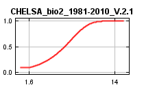
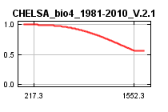
 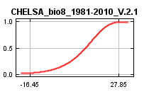
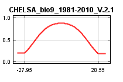
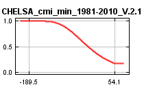
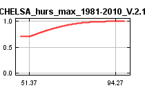
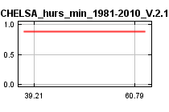
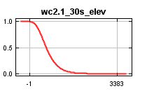
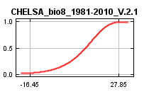
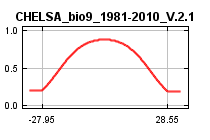
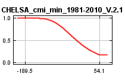
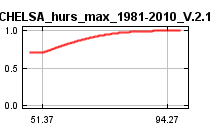
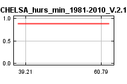
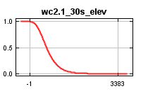
| Variable | Percent contribution | Permutation importance |
|---|---|---|
| CHELSA_bio8_1981-2010_V.2.1 | 62.3 | 13.3 |
| wc2.1_30s_elev | 12.7 | 27.6 |
| CHELSA_cmi_min_1981-2010_V.2.1 | 7 | 8.5 |
| CHELSA_bio9_1981-2010_V.2.1 | 5.3 | 8 |
| CHELSA_bio15_1981-2010_V.2.1 | 5.1 | 0.9 |
| CHELSA_bio5_1981-2010_V.2.1 | 3.3 | 9.7 |
| CHELSA_hurs_max_1981-2010_V.2.1 | 1.7 | 3 |
| CHELSA_bio2_1981-2010_V.2.1 | 1.4 | 21.7 |
| CHELSA_bio4_1981-2010_V.2.1 | 1.1 | 7.2 |
| CHELSA_hurs_min_1981-2010_V.2.1 | 0 | 0 |
| CHELSA_bio13_1981-2010_V.2.1 | 0 | 0 |